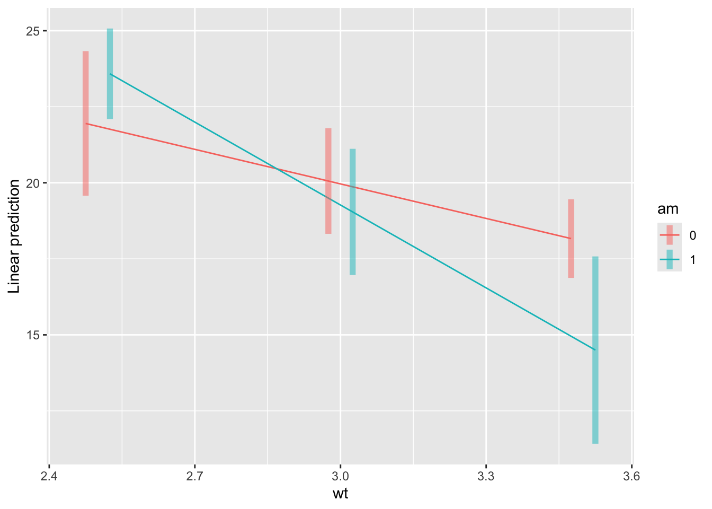
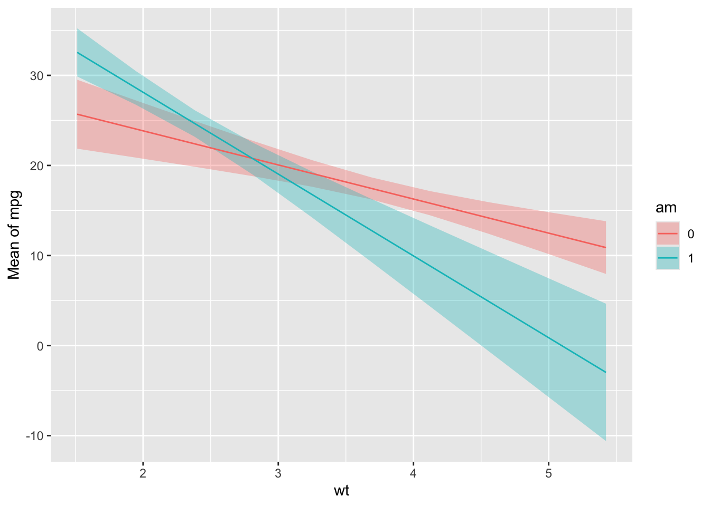
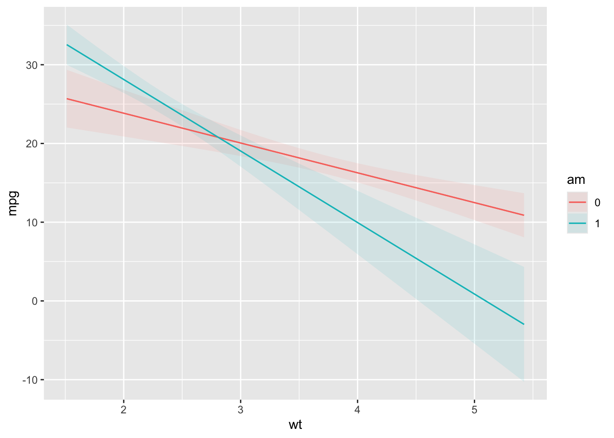
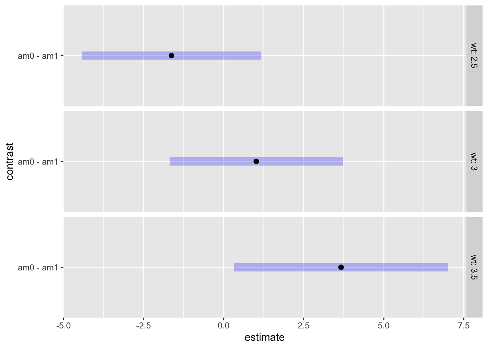

library(tidyverse)
library(emmeans)
library(marginaleffects)
library(modelbased)test
## use the mtcars data, set up am as a factor
mc <- mtcars |> mutate(am = factor(am))## fit a linear model to mpg with wt x am interaction
m <- lm(mpg ~ wt * am, data = mc)
summary(m)
Call:
lm(formula = mpg ~ wt * am, data = mc)
Residuals:
Min 1Q Median 3Q Max
-3.600 -1.545 -0.533 0.901 6.091
Coefficients:
Estimate Std. Error t value Pr(>|t|)
(Intercept) 31.416 3.020 10.40 0.00000000004 ***
wt -3.786 0.786 -4.82 0.00004551182 ***
am1 14.878 4.264 3.49 0.0016 **
wt:am1 -5.298 1.445 -3.67 0.0010 **
---
Signif. codes: 0 '***' 0.001 '**' 0.01 '*' 0.05 '.' 0.1 ' ' 1
Residual standard error: 2.59 on 28 degrees of freedom
Multiple R-squared: 0.833, Adjusted R-squared: 0.815
F-statistic: 46.6 on 3 and 28 DF, p-value: 0.00000000005211. means/counterfactuals for each level of am at mean wt
emmeans(m, specs = 'am')NOTE: Results may be misleading due to involvement in interactions am emmean SE df lower.CL upper.CL
0 19.2 0.736 28 17.7 20.7
1 17.1 1.210 28 14.6 19.6
Confidence level used: 0.95 estimate_means(m, by = 'am')avg_predictions(m, variables = 'am')
am Estimate Std. Error z Pr(>|z|) S 2.5 % 97.5 %
0 19.2 0.736 26.1 <0.001 498.2 17.8 20.7
1 17.1 1.213 14.1 <0.001 146.9 14.7 19.4
Type: response 2. means/counterfactuals for each level of am at wt = 2.5, 3, 3.5
emmeans(m, specs = c('am', 'wt'), at = list(wt = c(2.5, 3, 3.5))) am wt emmean SE df lower.CL upper.CL
0 2.5 22.0 1.160 28 19.6 24.3
1 2.5 23.6 0.727 28 22.1 25.1
0 3.0 20.1 0.848 28 18.3 21.8
1 3.0 19.0 1.010 28 17.0 21.1
0 3.5 18.2 0.631 28 16.9 19.5
1 3.5 14.5 1.500 28 11.4 17.6
Confidence level used: 0.95 estimate_means(m, by = c('am', 'wt = [2.5, 3, 3.5]'))avg_predictions(m, variables = list(am = unique, wt = c(2.5, 3, 3.5)))
am wt Estimate Std. Error z Pr(>|z|) S 2.5 % 97.5 %
0 2.5 22.0 1.161 18.91 <0.001 262.6 19.7 24.2
0 3.0 20.1 0.848 23.67 <0.001 408.9 18.4 21.7
0 3.5 18.2 0.631 28.79 <0.001 603.2 16.9 19.4
1 2.5 23.6 0.727 32.45 <0.001 765.0 22.2 25.0
1 3.0 19.0 1.013 18.79 <0.001 259.4 17.1 21.0
1 3.5 14.5 1.503 9.65 <0.001 70.7 11.6 17.4
Type: response 3. means/counterfactuals for wt = 2.5, 3, 3.5, averaged over levels of am
emmeans(m, 'wt', at = list(wt = c(2.5, 3, 3.5)))NOTE: Results may be misleading due to involvement in interactions wt emmean SE df lower.CL upper.CL
2.5 22.8 0.685 28 21.4 24.2
3.0 19.6 0.660 28 18.2 20.9
3.5 16.3 0.815 28 14.7 18.0
Results are averaged over the levels of: am
Confidence level used: 0.95 estimate_means(m, by = c('wt = [2.5, 3, 3.5]'))avg_predictions(m, variables = list(wt = c(2.5, 3, 3.5)))
wt Estimate Std. Error z Pr(>|z|) S 2.5 % 97.5 %
2.5 22.6 0.750 30.2 <0.001 661.5 21.1 24.1
3.0 19.6 0.650 30.2 <0.001 664.0 18.4 20.9
3.5 16.7 0.716 23.3 <0.001 395.7 15.3 18.1
Type: response 4. graphical version of 2
emmip(m, am ~ wt, at = list(wt = c(2.5, 3, 3.5)), CIs = TRUE)
estimate_means(m, by = c('wt', 'am')) %>% plot()
plot_predictions(m, condition = c('wt', 'am'))
5. compare levels of am at specific values of wt
pairs(emmeans(m, 'am', by = 'wt', at = list(wt = c(2.5, 3, 3.5))))wt = 2.5:
contrast estimate SE df t.ratio p.value
am0 - am1 -1.63 1.37 28 -1.192 0.2432
wt = 3.0:
contrast estimate SE df t.ratio p.value
am0 - am1 1.02 1.32 28 0.770 0.4479
wt = 3.5:
contrast estimate SE df t.ratio p.value
am0 - am1 3.67 1.63 28 2.249 0.0326estimate_contrasts(m, contrast = 'am', by = c('wt = [2.5, 3, 3.5]'))comparisons(m, variables = "am", newdata = datagrid(wt = c(2.5, 3, 3.5)))
wt Estimate Std. Error z Pr(>|z|) S 2.5 % 97.5 %
2.5 1.63 1.37 1.19 0.2332 2.1 -1.05 4.317
3.0 -1.02 1.32 -0.77 0.4415 1.2 -3.61 1.572
3.5 -3.67 1.63 -2.25 0.0245 5.3 -6.86 -0.471
Term: am
Type: response
Comparison: 1 - 06. plot of pairswise comparisons
plot(pairs(emmeans(m, specs = 'am', by = 'wt', at = list(wt = c(2.5, 3, 3.5)))))
estimate_contrasts(m, contrast = 'am', by = c('wt = [2.5, 3, 3.5]'))plot_comparisons(m, variables = 'am', condition = list(wt = c(2.5, 3, 3.5)))
7. slope of wt for each level of am
emtrends(m, specs = 'am', var = 'wt') am wt.trend SE df lower.CL upper.CL
0 -3.79 0.786 28 -5.4 -2.18
1 -9.08 1.210 28 -11.6 -6.60
Confidence level used: 0.95 estimate_slopes(m, trend = 'wt', by = 'am')slopes(m, variables = 'wt', by = 'am')
am Estimate Std. Error z Pr(>|z|) S 2.5 % 97.5 %
0 -3.79 0.786 -4.82 <0.001 19.4 -5.33 -2.25
1 -9.08 1.212 -7.49 <0.001 43.8 -11.46 -6.71
Term: wt
Type: response
Comparison: dY/dX